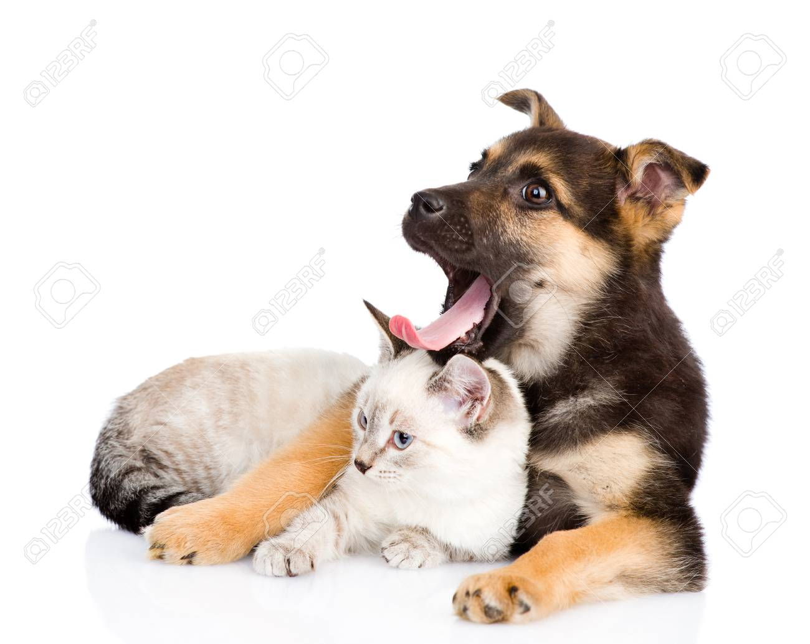
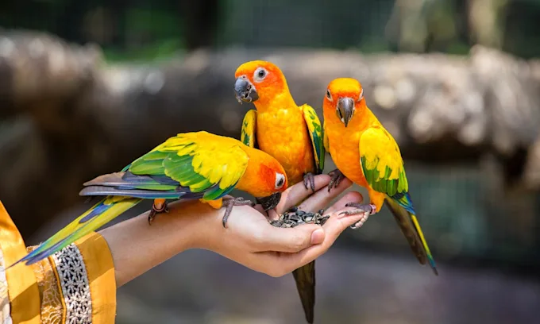
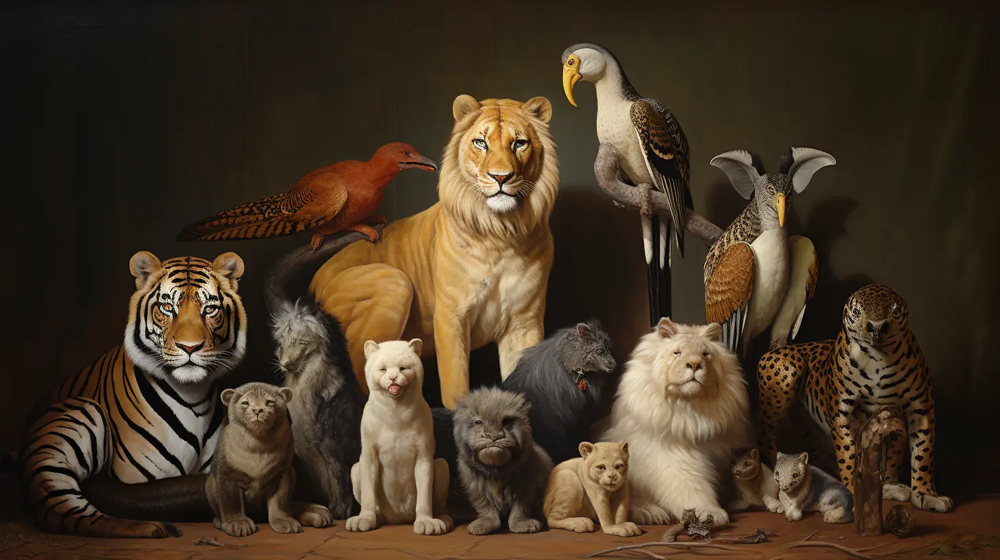
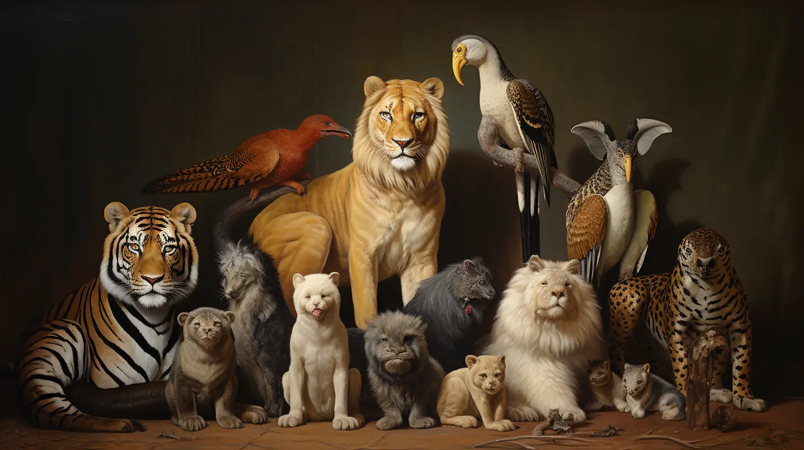
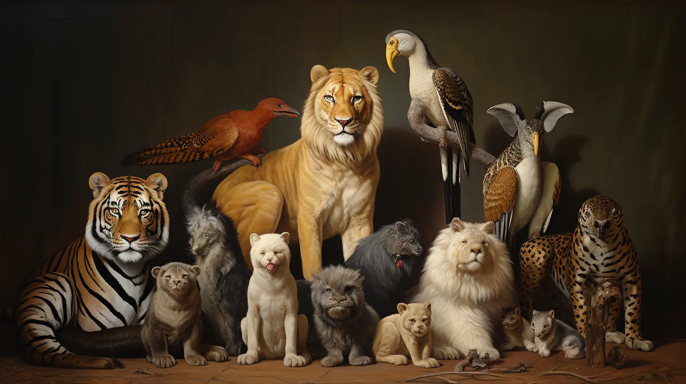
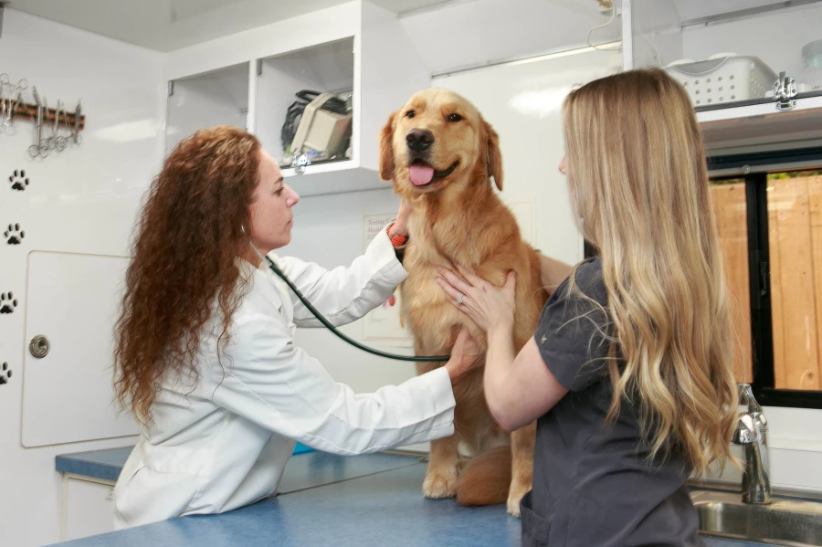
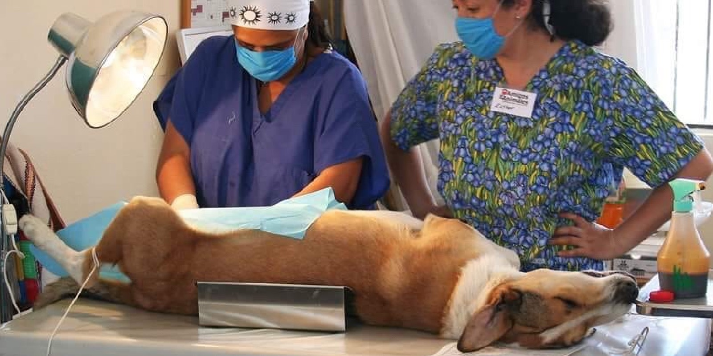
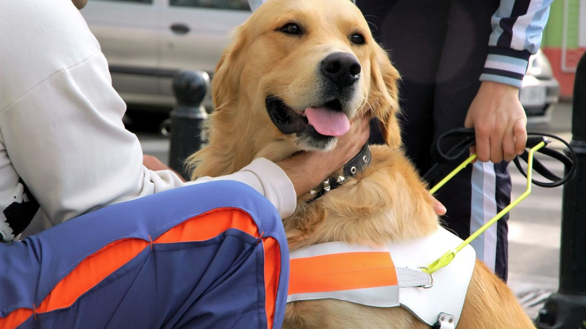
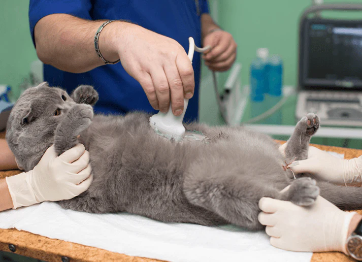

 


Clínica Veterinaria 24 Horas
Central Vet busca el bienestar de tu mascota. Somos una pagina de veterinarias con atención las 24 horas y los 7 días de la semana.
En nuestras clínicas, creemos que la medicina preventiva es fundamental para prolongar la vida y la salud de tu mascota, por lo que nos enfocamos en el asesoramiento y equipos de alta tecnología para que tus mascotas tengan una vida saludable y más duradera.



